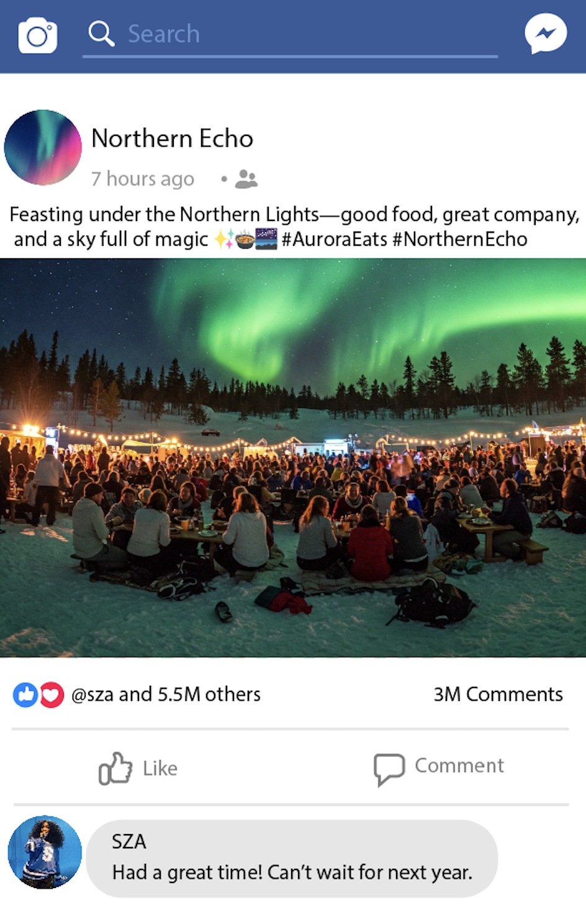
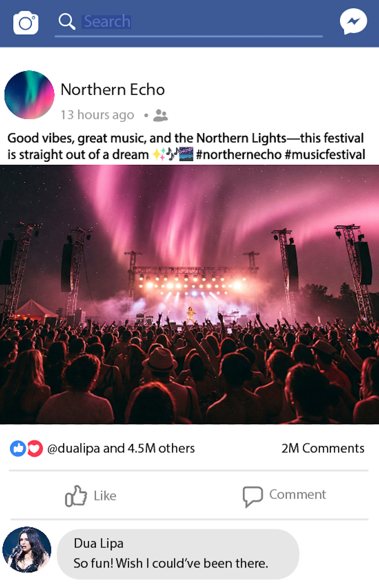

Witness the Northern Lights during the New Moon, on March 19th - March 21st (the 20th being the Spring Equinox, when conditions are most optimal) when they are most visible. Join us 8pm - 2am for good food, music and one of the world’s most beautiful natural phenomena. Hosted in the stunning Lofoten Islands of Norway, specifically Tromsø, this festival will celebrate talented artists and beautiful night skies. Far from light pollution, the location and time of Northern Echo maximises opportunity for an amazing view of Aurora Borealis.
 